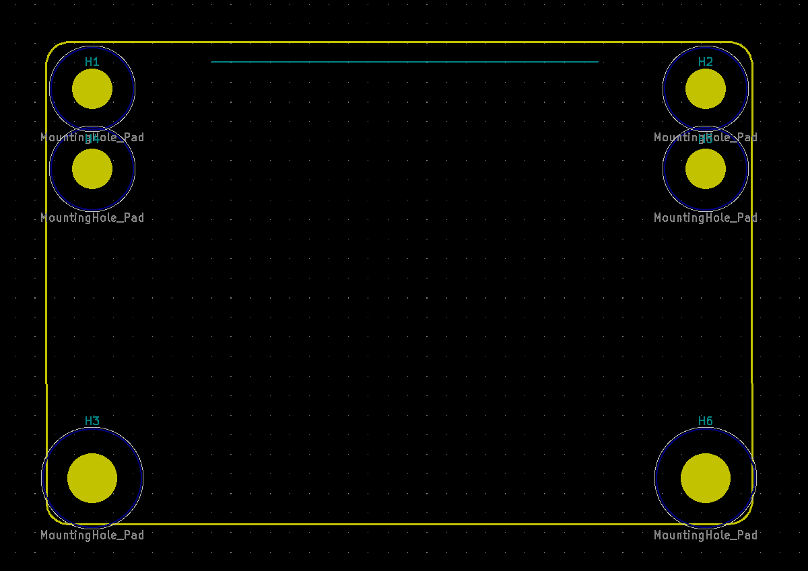

This printer replacement module template is base on the Dustin Woods's work. It includes a PCB template matching the outline of the DevTerm printer module with mounting holes placed correctly to align the base board.
Note:This template is build base on the Garber file that released by the Dustin Woods and import into the kicad 6.
